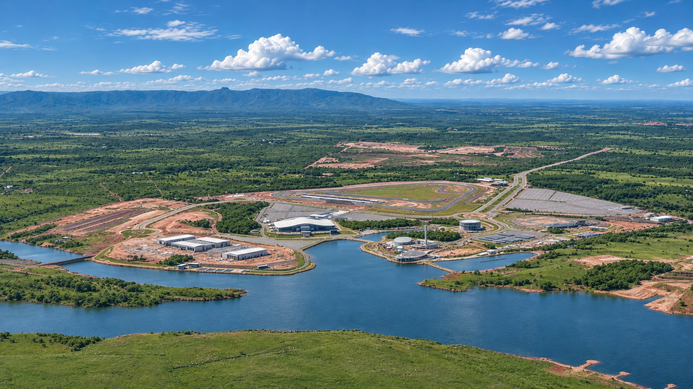

TESTE
Explorador com foto aérea: passe o mouse nos pontos e clique para ver o espaço completo.
PARQUE NOVO
MATO GROSSO
Quem Somos
Conheça os Espaços
Agenda
Imprensa
Contato
Trabalhe Conosco
Imagem aérea · Parque Novo Mato Grosso

Conheça os espaços
Explore o parque
Esporte, cultura, lazer e grandes eventos.
Passe o mouse e toque num ponto
Mostrar nomes
Também no parque, fora do enquadramento desta foto:
Mato Grosso se apresenta ao mundo aqui.